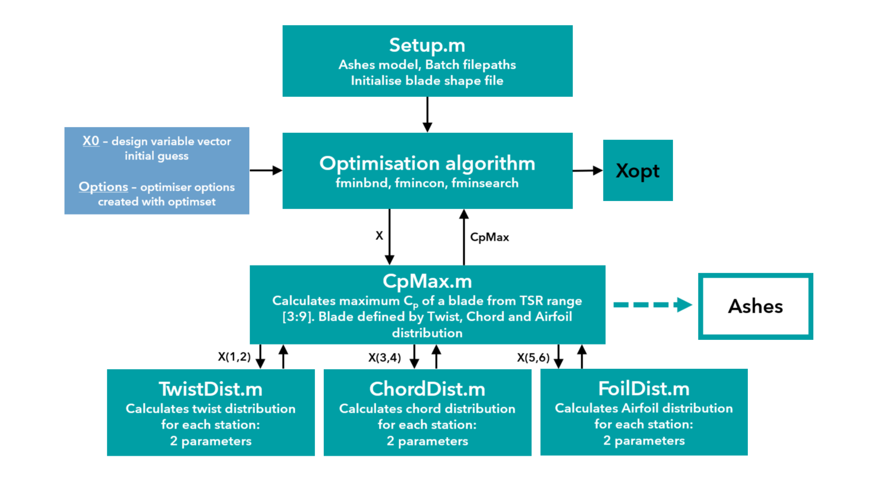
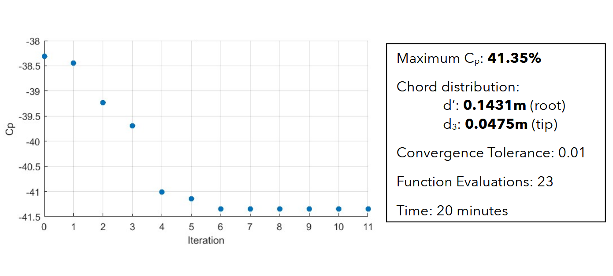
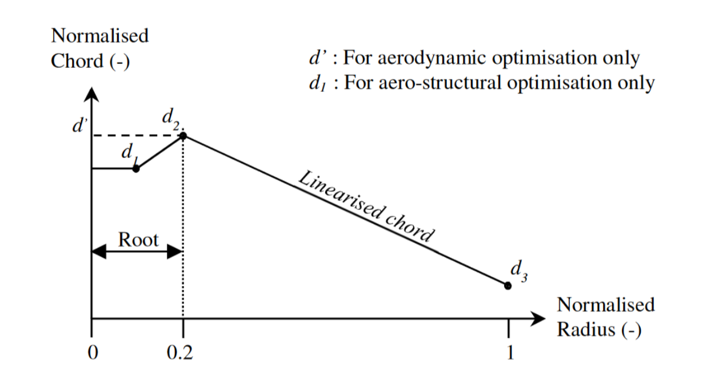
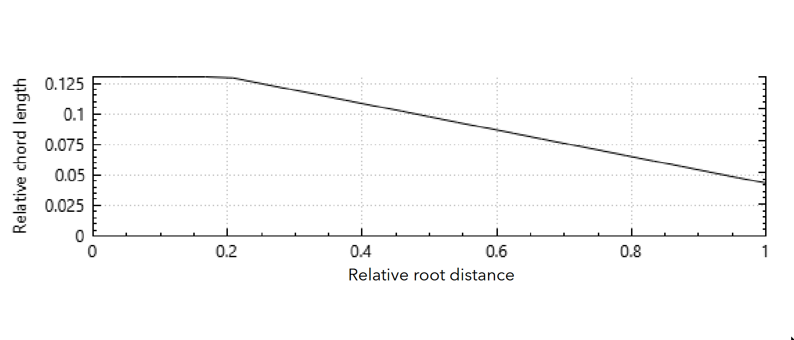
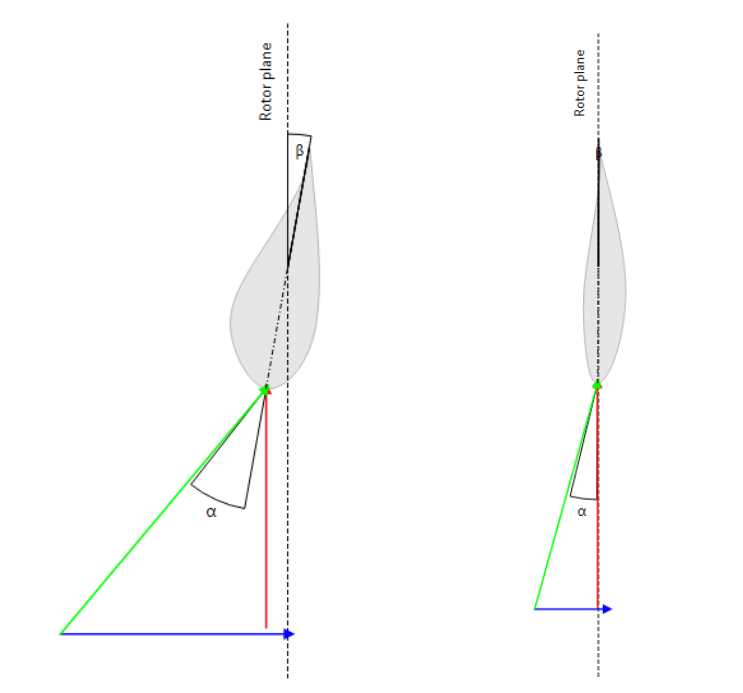
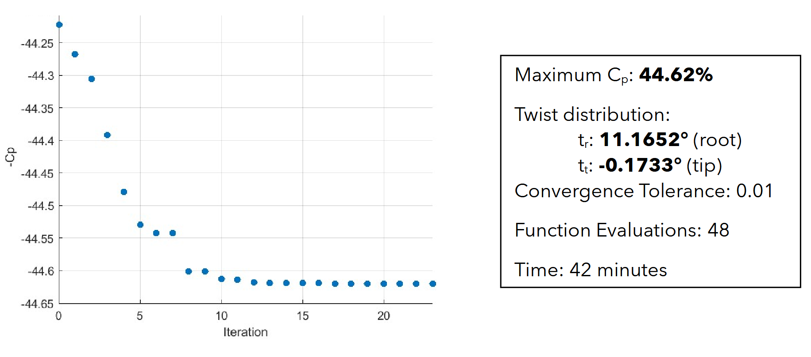
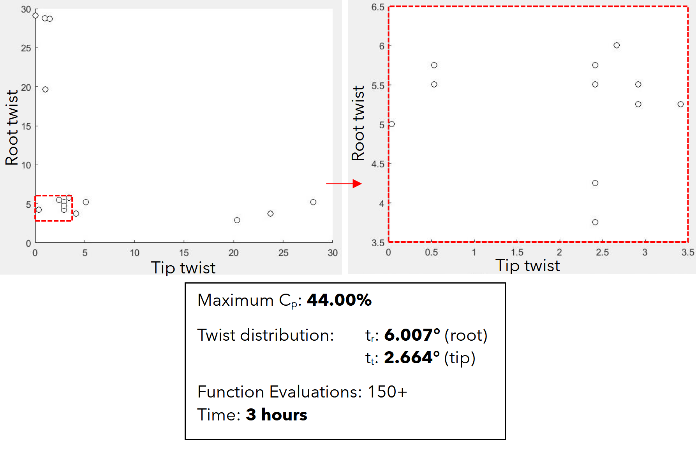
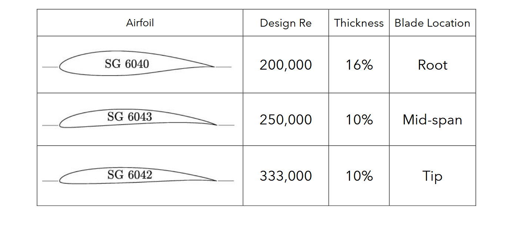
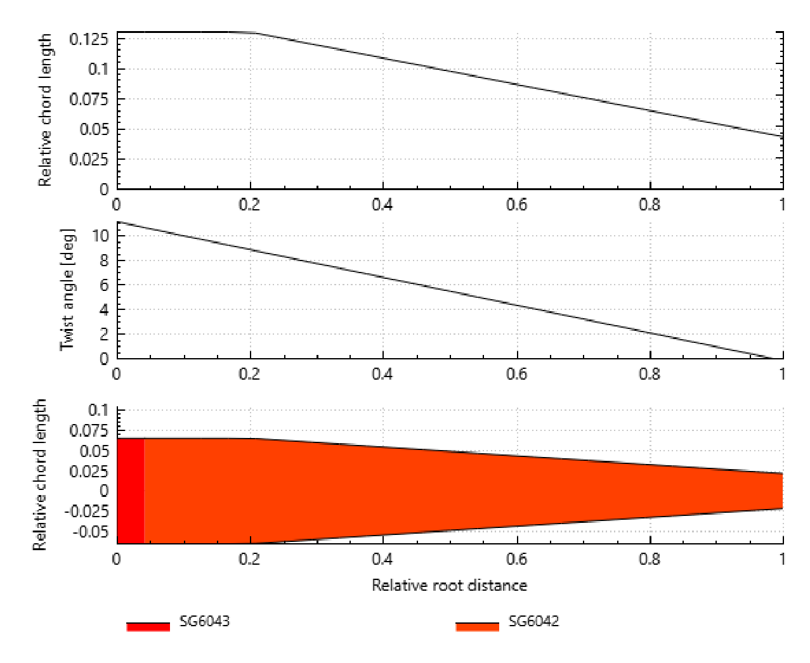

Small wind turbines up to 2m in diameter can be installed on residential property in the UK without planning permission. This study used design optimisation techniques to vary key characteristics of the turbine blade to maximise energy extraction from the wind.
The optimisation process used MATLAB's optimisation toolbox combined with a specialist wind turbine software (Ashes). Ashes evaluated the coefficient of power (Cp) of the blade across a range of tip-speed ratios (TSR - ratio of wind-speed to blade tip-speed) based on the chord, twist, and aerofoil section of the blade. The maximum Cp was then passed back to the MATLAB optimisation algorithm, which adjusted the design variables and sent it back to Ashes.

TWIST AND CHORD OPTIMISATION
For a constant chord, constant twist 3-blade turbine the maximum Cp was 38.3% (40-55% is typical). Stylianidis et al. (2010) suggests that the root of the blade does not contribute significantly to generating aerodynamic forces, but is critical structurally. This study only considered aerodynamics so the root of the blade has a fixed chord.



Varying blade twist optimises the angle of attack (α) along the blade. Untwisted root sections have high α (risk of flow separation) while tips have low α due to higher linear velocity.
A genetic algorithm reached Cp: 44%, then 2D Nelder-Mead optimisation achieved Cp: 44.6%



AEROFOIL SELECTION
As with twist, incoming air flow angle of attack and velocity require careful selection of aerofoils in the blade. Slower air-speed at the root
suits a thicker, higher lift-to-drag ratio aerofoil, while the tip requires a thinner, lower drag aerofoil to reduce losses at high speeds.
For this study I used the SG60 family of airfoils, Giguere & Selig (1998), which are designed for small wind turbines.
A 2D optimisation on the airfoil transition points indicated the best performance was a blade that started with tiny bit of SG6043,
and SG6042 for the rest. This increased Cp to 44.8%.

